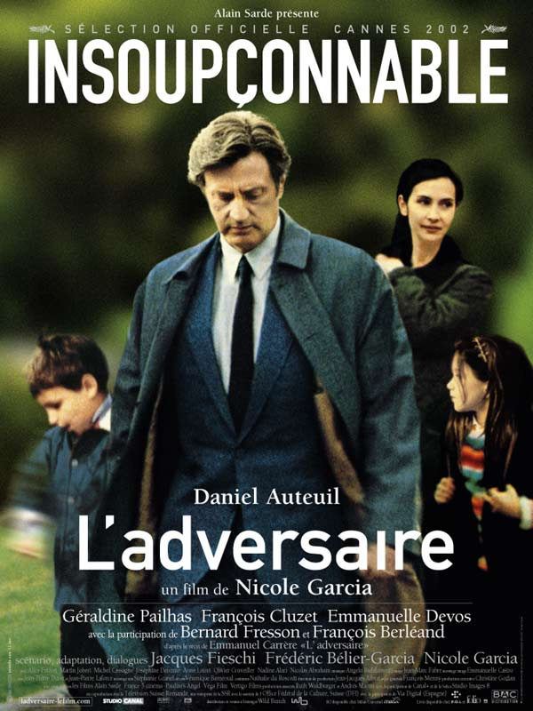

4 Janvier 2020
L'adversaire,
Emmanuel Carrère
Ce récit passionant nous raconte l'histoire d'un homme qui se disait médecin, mais qui un jour, tue sa famille et ses parents car il ne se sentait plus capable de tenir son lourd mensonge qu'il entretenait depuis 18 ans ...
Retrouvez le livre dans vos librairies ou sur la Fnac, Amazon et bien d'autres ...
Attention, certains passages de ce livre peuvent heurter la sensibilité du lecteur.

Emmanuel Carrère, écrivain, scénariste et réalisateur français est l’auteur du livre aux grandes polémiques nommé l'Adversaire et Jean-Claude Romand alias le faux médecin le personnage principal de l'histoire.

Laissez-moi vous expliquer qui est vraiment Jean-Claude Romand, comment et pourquoi il a mentit et le tournant funèbre que ce dernier a prit.
Emmanuel Carrère et Jean-Claude Romand ont dû se voir et communiquer pour écrire L’Adversaire, mais comment cette relation a-t-elle aidé Jean Claude Romand à trouver la vérité, et comment leur relation a-t-elle évoluée ?
Emmanuel Carrère tente dans son ouvrage d’aider Jean Claude Romand à trouver la vérité de pourquoi avoir commis son crime tout en montrant la sensibilité d’un meurtrier.

La différence entre le récit et le simple roman a dans ce livre une importance capitale, qui donne même de son sens à l’histoire.

Le livre est parsemé de passages qui marquent le lecteur, restent en mémoire et nous poussent à la réflexion. En voici un petit condensé.

Il n'y a pas seulement le livre de Emmanuel Carrière qui raconte l'histoire de Jean-Claude Romand, un film a aussi été réalisé sur son histoire.
Malgré sa popularité, Emmanuel Carrère possède une relation bien spéciale avec les médias qui sont devenus son exutoire.

Les avis de chacun, ce que nous avons pensé, aimé, ce qui nous a rebutté ...